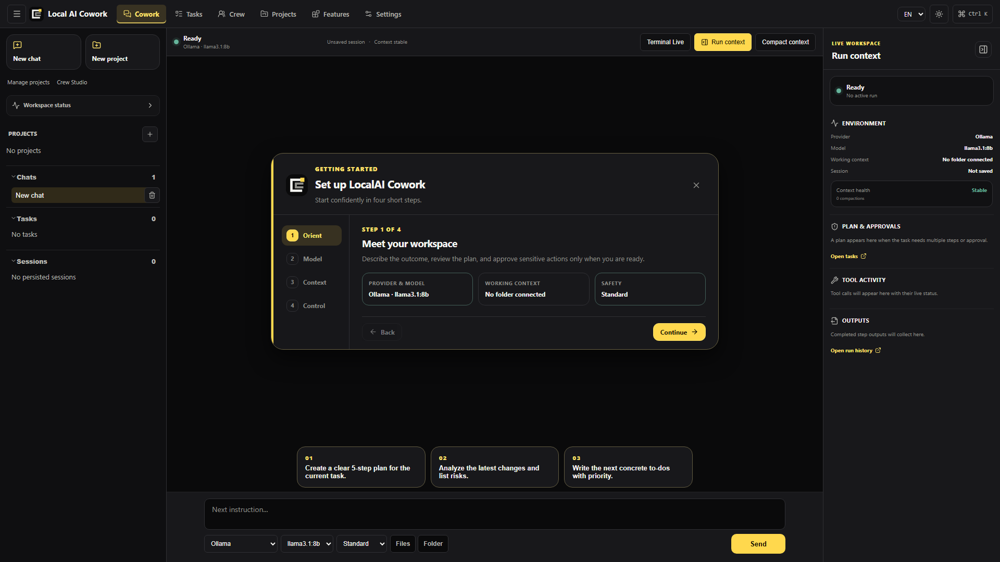

Ergebnis zuerst
Arbeite mit einem sichtbaren Plan statt mit einem verschwindenden Prompt.
Beschreibe, wie „fertig“ aussieht. Schritte, Aufgabenstatus, Tool-Aktivität und Ergebnis bleiben verbunden.
Lokal // Windows // Apache-2.0
Plane das Ergebnis, nutze dein eigenes Modell, verbinde die benötigten Werkzeuge und behalte wichtige Aktionen sichtbar. Eine lokale Alternative für alle, die mehr Kontrolle als in einem geschlossenen KI-Arbeitsbereich wollen.

01 // Der Arbeitsbereich
LocalAI Cowork hält Ziel, Kontext, Ausführung und Prüfung zusammen – damit die Arbeit auch während der Ausführung verständlich bleibt.
Ergebnis zuerst
Beschreibe, wie „fertig“ aussieht. Schritte, Aufgabenstatus, Tool-Aktivität und Ergebnis bleiben verbunden.
Modellwahl
Arbeite lokal mit Ollama oder konfiguriere bei Bedarf einen kompatiblen gehosteten Endpunkt.
Gewählter Kontext
Wähle Ordner, Dokumente und Projektanweisungen passend zum aktuellen Ziel.
Echte Werkzeuge
Nutze MCP-Server, lokale Tools, Terminal-Abläufe, Skills und wiederverwendbare Pipelines, ohne die Aktivität zu verstecken.
02 // Der Arbeitsablauf
Ein klarer Ablauf macht aus einer Anfrage kontrollierte Arbeit und ein Ergebnis, das du vor der Verwendung prüfen kannst.
Definiere Resultat, Projekt, Modell und relevanten Kontext.
Sieh Plan, Tool-Aufrufe, Fortschritt und erzeugte Artefakte.
Schütze sensible Aktionen durch klare Regeln und Freigabepunkte.
Verwandle wiederholbare Anweisungen in Skills, Vorlagen und Pipelines.
03 // Lokal gedacht
Die Desktop-App läuft auf deinem Gerät. Du entscheidest, ob eine Aufgabe ein lokales Modell oder einen konfigurierten entfernten Dienst verwendet und welche Dateien und Tools erreichbar sind.
Datenschutzgrenzen lesen04 // Unterschiede verstehen
Claude Cowork, Microsoft Copilot Cowork und LocalAI Cowork bedienen unterschiedliche Ökosysteme. Vergleiche die praktischen Unterschiede, ohne die Produkte gleichzusetzen.
Source access, local models, execution, subscriptions, and cost.
GUIDE / 02Local desktop work compared with Microsoft 365 automation.
GUIDE / 03Inspectable source, control, privacy, and extensibility.
GUIDE / 04Compare LocalAI Cowork with the broader open cowork software category.
Öffentlich entwickelt
Lade die App herunter, prüfe jede Ebene und gestalte eine offene Alternative für agentische Arbeit mit.
05 // Vor der Installation
LocalAI Cowork ist Software in einer frühen Phase. Diese Grenzen solltest du kennen, bevor du sie für echte Arbeit einsetzt.
LocalAI Cowork ist ein quelloffener Windows-Desktop-Arbeitsbereich für KI-gestützte Arbeit. Er vereint Chat, Aufgaben, Dateikontext, Modellkonfiguration, MCP-Server, Werkzeuge, Freigaben und Audit-Informationen.
Nein. OpenCowork und Open Cowork werden von anderen unabhängigen Projekten genutzt. LocalAI Cowork ist separat; der OpenCowork alternative guide erklärt, wie man offene Cowork-Tools vergleicht, ohne Produktnamen zu vermischen.
Nein. LocalAI Cowork ist ein unabhängiges Projekt und nutzt derzeit Ollama für lokale Modellausführung. Es ist weder mit dem separaten LocalAI-Projekt auf localai.io noch mit Anthropic oder Microsoft verbunden.
Ja. Ollama wird für lokale Modellausführung unterstützt. Zusätzlich kannst du OpenAI-kompatible oder OpenRouter-Endpunkte konfigurieren.
Die App läuft lokal und die aktuelle Version besitzt keinen implementierten Telemetrie-Sender. Daten verlassen das Gerät nur, wenn du einen entfernten Modell-Endpunkt, Connector, MCP-Server oder ein netzwerkfähiges Tool auswählst. Diese Dienste erhalten die für deine Aktion benötigten Informationen.
Ja. Die App steht unter der Apache License 2.0. Ein entfernter Modellanbieter kann eigene API-Kosten berechnen; lokales Ollama benötigt kein Anbieter-Abo.
Installer und Smoke-Tests richten sich derzeit an Windows 10 und Windows 11. Weitere Plattformen sind später möglich, werden aktuell aber nicht als Release-Ziel gepflegt.